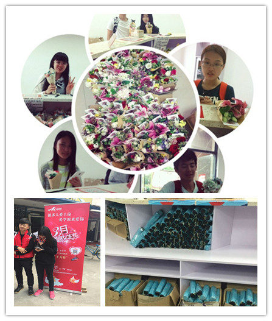

爱学派 只做适合大学生的校园快递服务平台
伴随着当今大学生消费群体的日益扩大，大学生消费能力的日益提高，校园快递也成为了当今物流行业的一大焦点，吸引着各方巨头的关注。近期，记者了解到，由上海指端信息科技有限公司推出的校园快递品牌——爱学派，针对校园快递现状，结合“互联网+校园物流”新风潮，正式推出“最后一百米”配送服务，并赢得了众多大学生群体的认可。
在采访中，爱学派创办人盛勤告诉记者，爱学派作为校园快递服务平台，旨在从学生需求出发，为学生带来便捷快递服务的同时，实现对更好的校园环境的打造，共建校园生态。“我们积极与高校合作，在校内建设标准化门店，实行规范化管理，让每一份校园快递都可以更快更好地送到大学生手中”，盛勤表示，“目前，我们的服务区域已经覆盖华北、华东等各大高校。”
从目前来看，爱学派“最后一百米”配送服务的出现与流行至少解决了以下问题：1、从根本上解决快递公司配送成本和投诉率居高不下的问题；2、改变传统校园快递取件处脏乱差的情况。爱学派“最后一百米”配送服务的优势在于当快递公司将快递运达爱学派校园直营门店或加盟点，在经过工作人员专业的分拣、上架之后，学生可以通过手机APP在几分钟内就可以获得快递收取信息，整个过程相当快捷。另外，爱学派还允许学生在店内直接拆包裹，废弃的包裹袋，爱学派工作人员会主动帮忙处理，避免了乱扔、乱放的情况的出现，这对于打造美好校园物流环境无疑有着极好的效果。
在采访中，上海的一位大学生告诉记者，爱学派工作人员有时候还会发给学生一些小礼品。“我之前拿到过一个小玩具”，该大学生表示，“后来送给我女友了，她很喜欢，不过希望爱学派能多送一些我们男生喜欢的东西，毕竟每次都是我去取快递嘛。”另外，爱学派通过招募兼职大学生的方式，为大学生提供勤工俭学、社会实践机会也为众多大学生所津津乐道。“通常每个大学爱学派门店，我们都会招募几位兼职大学生”，爱学派创办人盛勤表示，“一方面，我们通过这种方式与大学生实现无缝沟通，在服务方面实现调整和改进，因为大学生更为了解他们自己的同龄人，另外一方面，大学生本身也可以在兼职中获得锻炼。”
在当今大学生群体已经成为电商消费一大主流群体的情况下，爱学派所提供的校园快递服务，在为大学生提供更为便捷服务的同时，也实现了校园快递的有效整合，对于打造和谐校园、卫生校园有着重大意义。“未来，我们还将进一步将爱学派拓展到更多的大学校园”，在采访的最后，爱学派创办人盛勤告诉记者，“让更多的大学生感受到爱学派所提供的便捷服务。”